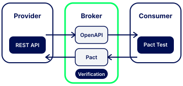
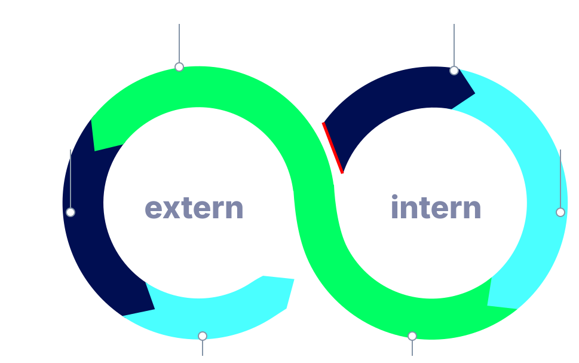

Building the future of the TI developer experience.
Welcome to the gematik Developer Portal pilot. Currently featuring the
VSDM 2.0 API, this portal gives you interactive documentation, a mock server,
contract testing, and code generation — everything you need to integrate
with the Telematikinfrastruktur.
Core Features
Three pillars of the TI developer experience.
From interactive API exploration to contract testing and automated
quality gates — everything you need to build reliable TI integrations.
Validate your integrations against official gematik API contracts using Pact.
Publish your consumer contracts to our PactFlow broker and get
automated compatibility verification against the provider.
Bidirectional Contract Testing (Pact)
CI/CD pipeline integration
Automated compliance & breaking change detection
Detailed compatibility reports
Learn more
API Lifecycle Managment
Behind the scenes, our automated API lifecycle pipeline ensures every
published API meets strict quality standards — from FHIR source to
validated OpenAPI specification.
FHIR → OpenAPI generation (custom tooling)
OpenAPI Overlays for environment configs
Automated linting (Spectral) & validation
Continuous publishing to API Portal
Learn more
Contract Testing — Deep Dive

Pilot context (VSDM2)
We are currently running a VSDM2 pilot for contract testing. In this setup, the
Provider is the VSDM2 Fachdienst and the
Consumer is the Primärsystem.
Contract testing with Pact ensures that your consumer application and the gematik provider
APIs stay compatible throughout the development lifecycle. Instead of relying on fragile
end-to-end tests, you define explicit contracts that describe the interactions your
application expects. These contracts are then verified against the actual provider
implementation on our PactFlow broker.
The workflow integrates seamlessly into your CI/CD pipeline. After writing Pact tests
locally, you publish the generated contract files to our broker using API tokens.
The broker automatically runs verification against the provider and reports back
whether your consumer contract is compatible. Breaking changes are detected before
they reach production, giving you confidence in every deployment.
Click on the lifecycle stages in the diagram below to explore each phase in detail.

The API Lifecycle Managment is the backbone of our API quality assurance process. Starting from
specified FHIR resources, our custom tooling generates OpenAPI specifications that
accurately reflect the underlying data models. These specs are then enriched with
environment-specific overlays for REF, TU, and PU server configurations, ensuring
that each deployment target has the correct base URLs and authentication parameters.
Every generated specification passes through automated linting with Spectral rules
tailored to gematik's API design guidelines. The pipeline validates structural
correctness, naming conventions, examples correctness, and security scheme definitions. Once all quality
gates pass, the specification is automatically published to the API Portal, keeping
the documentation always in sync with the latest FHIR resources.
This pilot currently features the VSDM 2.0 API. More APIs will be added
based on your feedback. Here's how to get the most out of each tool.
1
Explore the API Portal
The API Portal contains all API descriptions generated and validated by our toolchain.
Currently it features the VSDM 2.0 pilot project. The portal provides:
A SwaggerHub Auto Mocking Server that simulates VSDM2 API responses
Server environments for REF, TU and PU (currently listed as reference only)
Code samples in Java, C#, Go, JavaScript, PHP, Python, Scala, Swift and more
Multiple example responses for each endpoint
The code generator has been tested for Java, C# and TypeScript. You can also integrate
the openapi-generator
into your own codebase to generate HTTP clients and model classes.
This reduces manual implementation effort on the client side and ensures consistent API usage.
If you experience issues or would like us to test additional languages, please let us know!
2
Download OpenAPI Specifications
Every time a new VSDM2 FHIR specification is published, our CI/CD pipeline
automatically generates an updated OpenAPI specification. Two variants are available:
VSDM2 with ZETA
The ZETA-Guard to Resource Server interface, including all HTTP headers required for
access via the ZETA Guard. Use this for understanding the full TI 2.0 interface requirements
and building API routing without the ZETA SDK.
Use Pact,
an open-source contract testing framework, to validate service interactions
without relying on complex end-to-end tests. Recommended workflow:
Verify your tech stack supports Pact
Download the OpenAPI spec and use it as the basis for a mock server
Write Pact tests covering your expected interactions
Generate a Pact file (pact.json) and publish it to our broker
Contact us with your desired application name for the Pact Broker.
We will provide you with two API tokens: a Read/Write token for your CI/CD pipelines
and a Read-Only token for reports and dashboards.
We value your feedback! This portal is in its pilot phase.
If you encounter issues, need additional language support for code generation,
or have suggestions for improvement, please let us know.
Resources
Everything at your fingertips.
From specifications to code examples — find all the resources
you need in one place.
Find FHIR profiles, API documentation, and specifications for the projects relevant to the VSDM2.0 pilot project.
Use this table to jump directly to the right place.